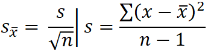

CFA Textbook
--------------------
Study Session 3 Quantitative Methods :
Application
--------------------
Reading 11 Sampling and Estimation
--------------------
Summary
- To draw valid inferences from a sample, the sample should be
random.
- In simple random sampling, each observation has an equal
chance of being selected. In stratified random sampling, the
population is divided into subpopulations, called strata or cells,
based on one or more classification criteria; simple random samples
are then drawn from each stratum.
- Stratified random sampling ensures that population
subdivisions of interest are represented in the sample. Stratified
random sampling also produces more-precise parameter estimates than
simple random sampling.
- Time-series data are a collection of observations at equally
spaced intervals of time. Cross-sectional data are observations that
represent individuals, groups, geographical regions, or companies at
a single point in time.
- The central limit theorem states that for large sample sizes,
for any underlying distribution for a random variable, the sampling
distribution of the sample mean for that variable will be
approximately normal, with mean equal to the population mean for that
random variable and variance equal to the population variance of the
variable divided by sample size.
- Based on the central limit theorem, when the sample size is
large, we can compute confidence intervals for the population mean
based on the normal distribution regardless of the distribution of
the underlying population. In general, a sample size of 30 or larger
can be considered large.
- An estimator is a formula for estimating a parameter. An
estimate is a particular value that we calculate from a sample by
using an estimator.
- Because an estimator or statistic is a random variable, it is
described by some probability distribution. We refer to the
distribution of an estimator as its sampling distribution. The
standard deviation of the sampling distribution of the sample mean is
called the standard error of the sample mean.
- The desirable properties of an estimator are unbiasedness
(the expected value of the estimator equals the population
parameter), efficiency (the estimator has the smallest variance), and
consistency (the probability of accurate estimates increases as
sample size increases).
- The two types of estimates of a parameter are point estimates
and interval estimates. A point estimate is a single number that we
use to estimate a parameter. An interval estimate is a range of
values that brackets the population parameter with some probability.
- A confidence interval is an interval for which we can assert
with a given probability 1 − α, called the degree of confidence, that
it will contain the parameter it is intended to estimate. This
measure is often referred to as the 100(1 − α)% confidence interval
for the parameter.
- A 100(1 − α)% confidence interval for a parameter has the
following structure: Point estimate ± Reliability factor × Standard
error, where the reliability factor is a number based on the assumed
distribution of the point estimate and the degree of confidence (1 −
α) for the confidence interval and where standard error is the
standard error of the sample statistic providing the point estimate.
- A 100(1 − α)% confidence interval for population mean μ when
sampling from a normal distribution with known variance σ2 is given
by X ± zα/2
(σ/√n) , where zα/2 is the point of the standard normal
distribution such that α/2 remains in the right tail.
- Student’s t-distribution is a family of symmetrical
distributions defined by a single parameter, degrees of freedom.
- A random sample of size n is said to have n − 1 degrees of
freedom for estimating the population variance, in the sense that
there are only n − 1 independent deviations from the mean on which to
base the estimate.
- The degrees of freedom number for use with the t-distribution
is also n − 1.
- The t-distribution has fatter tails than the standard normal
distribution but converges to the standard normal distribution as
degrees of freedom go to infinity.
- A 100(1 − α)% confidence interval for the population mean μ
when sampling from a normal distribution with unknown variance (a
t-distribution confidence interval) is given by X ± tα/2 ( s / √
n ) , where tα/2 is the point of the t-distribution such
that α/2 remains in the right tail and s is the sample standard
deviation. This confidence interval can also be used, because of the
central limit theorem, when dealing with a large sample from a
population with unknown variance that may not be normal.
- We may use the confidence interval X ± zα/2 ( s / √
n ) as an alternative to the t-distribution confidence interval for
the population mean when using a large sample from a population with
unknown variance. The confidence interval based on the z-statistic is
less conservative (narrower) than the corresponding confidence
interval based on a t-distribution.
- Three issues in the selection of sample size are the need for
precision, the risk of sampling from more than one population, and
the expenses of different sample sizes.
- Sample data in investments can have a variety of problems.
Survivorship bias occurs if companies are excluded from the analysis
because they have gone out of business or because of reasons related
to poor performance. Data-mining bias comes from finding models by
repeatedly searching through databases for patterns. Look-ahead bias
exists if the model uses data not available to market participants at
the time the market participants act in the model. Finally,
time-period bias is present if the time period used makes the results
time-period specific or if the time period used includes a point of
structural change.
中文手册整理
- 抽样误差（sampling error）
- 时间序列数据和截面数据
- 中心极限定理
- 总体期望μ，方差σ²，如果样本数量n足够大时，样本均值X~N(μ,σ²/n)
- 不管总体是什么分布，只要样本量足够大，样本均值就服从正态分布
- 样本均值的期望等于总体期望
- 样本均值的方差等于总体方差除以样本量
- 样本均值的标准误
- 已知总体标准差时，样本均值的标准误=总体标准差除以样本数量的平方根
- 未知总体标准差时，样本均值的标准误=样本标准差除以样本数量的平方根
- 好的估计量的性质
- 无偏性，期望值无偏
- 有效性，方差最小的无偏估计量
- 一致性，样本估计量接近总体参数真值的概率
- 总体参数的点估计和区间估计
- 点估计指用样本均值作为总体均值
- 区间估计指用样本分布计算总体均值的置信区间
- 总体均值的置信区间=点估计±关键值×样本均值标准误
- 方差已知用z，方差未知用t，大样本可用z，非正态总体小样本不可估计
- 偏差
- 数据挖掘偏差，把偶然当成必然
- 样本选择偏差，有些样本选择不到
- 存活偏差，幸存者偏差
- 前视偏差，有检验日无法得到的信息
- 时间区间偏差，短期无法反应长期过程，长期无法衡量期间变化
--------------------
Next Reading